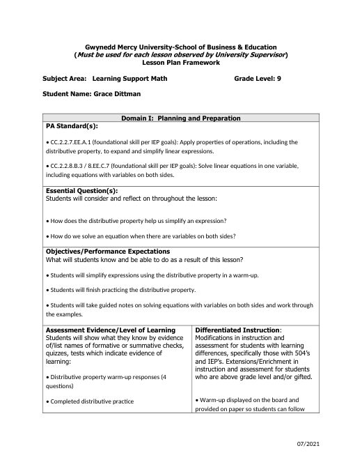
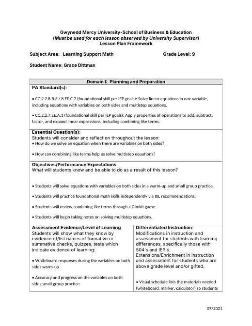
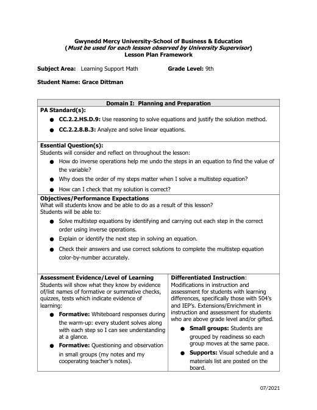

Grace Dittman
Student Teaching Portfolio
Block 2 Math
Block 3 Math
ESS
Lesson Plans
Résumé
Search
Home
›
Block 3 Math
›
Week 9
›
Lesson Plans
Lesson Plans
← Activities
Notes →

Distributive Property & Variables on Both Sides
B3_10-23&26LessonPlan.docx

Variables on Both Sides & Multistep Equations
B3_10-27&28LessonPlan.docx

Multistep Equations Color-by-Number
B3_10-29&30LessonPlan.docx
← Activities
Notes →